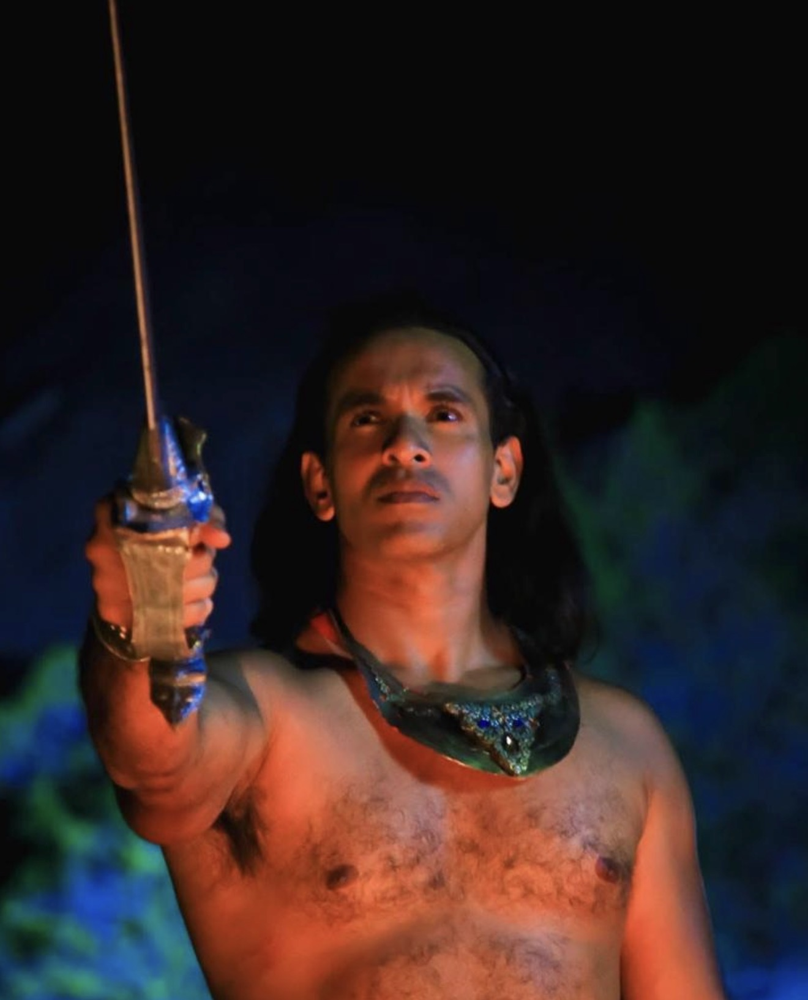

Actor across Sinhala cinema and teledrama, known for roles spanning historical epics to contemporary drama. Founder, Z+ Productions.
Malinda Perera is a Sri Lankan actor working across film and teledrama, recognised early with a Best Upcoming Actor award for his role in Kanda Lihiniya. His subsequent work moves between large-scale historical narrative and grounded contemporary drama.
Beyond performance, he is the founder of Z+ Productions, a venture through which he develops and produces original screen work alongside his acting career.
A selection of film and teledrama credits, in no particular chronology.
Malinda Perera is the founder of Z+ Productions, a Sri Lankan production venture built alongside his acting career to develop original screen work.
The company reflects his continued involvement in Sinhala film and television beyond performance, spanning development and production.